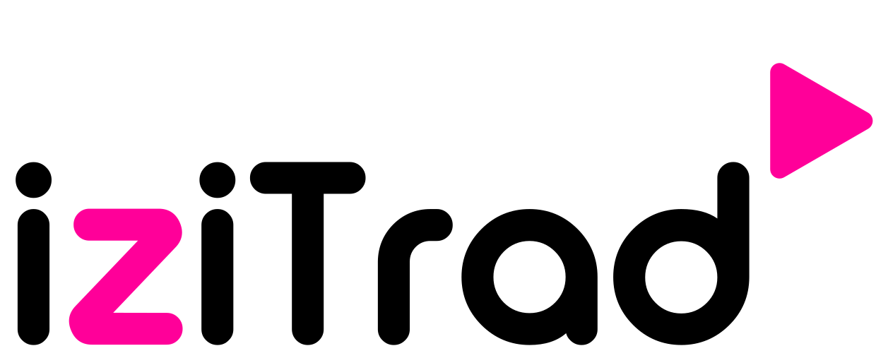
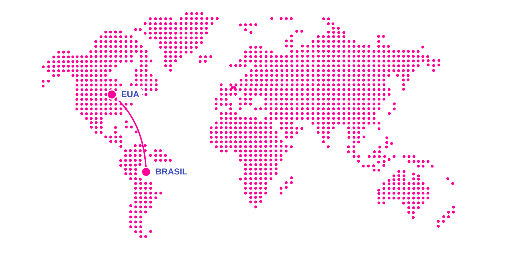

Você envia seu documento, a gente apostila em cartório credenciado e devolve pronto em até 24h — válido em 120+ países.
Apostilar pelo WhatsAppSeu documento Seu destino O caminho certo
Apostilamento e tradução juramentada sem você precisar decifrar a burocracia.
Explorar o caminho ↓Um documento.
Cinco jeitos de
chegar lá.
Apostila, tradução, ou os dois — a ordem muda o resultado.
Veja qual combinação é a sua.

01 / DOCDIPLOMADE GRADUAÇÃO
Mais possibilidades.
saiba mais

A GENTE SIMPLIFICA
O QUE TE LEVA LONGE.
A ORDEMVOCÊ JÁESCOLHEUAGORA, QUALÉ A SUA?
Juramentada, certificada, técnica ou simples — cada uma serve pra um caso diferente. Toque num
triângulo pra descobrir.
E como é fazer isso com a ?
E por trásdo simples?
Seis compromissos que fazem da IZITRAD uma experiência simples, mas nunca simplista, do orçamento à entrega, com precisão, transparência e validade oficial.
Tradução juramentada com validade oficial
Nossas traduções juramentadas são realizadas por Tradutores Públicos e Intérpretes Comerciais devidamente matriculados na Junta Comercial de seu estado. Isso garante fé pública e validade legal ao seu documento, com aceitação em consulados, cartórios, universidades e órgãos oficiais no Brasil e no exterior.
Todos os tipos de tradução
Juramentada, certificada, técnica ou simples. Seja qual for a exigência do seu processo, você resolve tudo em um só lugar, com uma equipe que acompanha o seu pedido do início ao fim e está pronta para ajustar o que for preciso.
Precisão em cada detalhe
Contratos, laudos, sentenças e manuais técnicos exigem mais do que dominar o idioma. Trabalhamos com a terminologia de cada área e, se preferir, você pode nos enviar um glossário próprio para servir de referência na tradução, além de reproduzirmos o layout original.
Cada país lê de um jeito
Dominar um idioma é o começo. Entender como um diploma, uma certidão ou um contrato é lido no país de destino é o que faz a diferença. Traduzimos em inglês, italiano, espanhol e outros idiomas com esse cuidado.
Transparência do orçamento à entrega
Você conhece o valor antes de qualquer etapa começar. O orçamento considera o idioma e o volume do documento, chega pelo WhatsApp sem compromisso e não esconde taxas. A tradução só começa depois da sua aprovação.
Pronto para ser aceito no exterior
Tradução e apostilamento de Haia em um só lugar. Na IZITRAD, seu documento recebe a apostila digital em até 24 horas, emitida por cartório credenciado pelo CNJ, com validade em mais de 120 países e autenticidade verificável online por qualquer autoridade estrangeira.
DESTINO
seção em desenvolvimento
CONFIANÇA
seção em desenvolvimento
ORÇAMENTO
seção em desenvolvimento
FAQ
seção em desenvolvimento